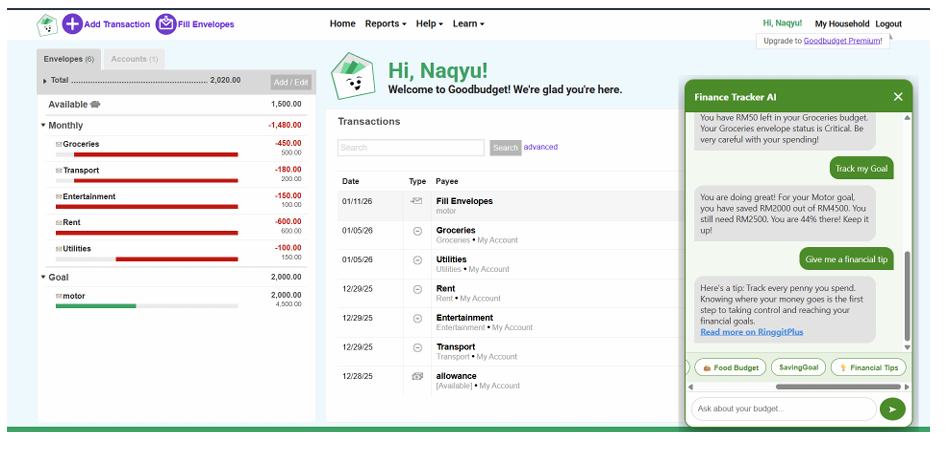
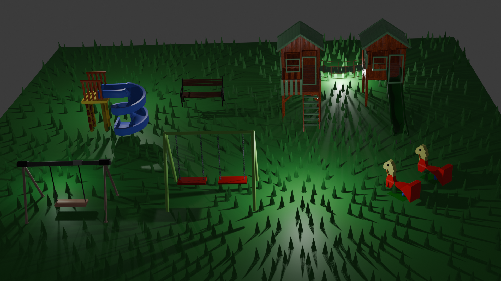
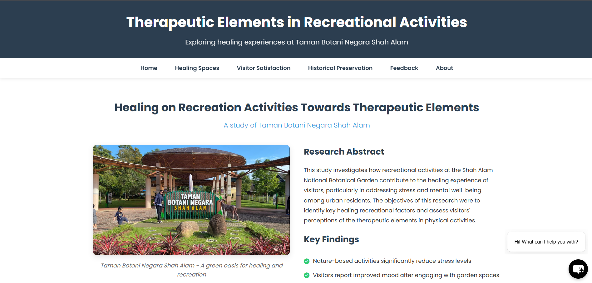

Academic Profile
| Degree | Institution | Role / Specialization | Year |
|---|---|---|---|
| Bachelor of Computer Science (Hons.) Multimedia Computing | Universiti Teknologi MARA (UiTM) | Software Requirement Analyst / Core Developer | 2023 - Present |
Core Competencies
- Game & VR Development: Unity Engine, C# Scripting, Physics engines, 2D/3D Environment Design.
- Web Development: HTML5, CSS3, Tailwind CSS, JavaScript, Flask (Python Backend).
- Artificial Intelligence & Image Processing: Deep Learning, CNN Architecture (VGG16), TensorFlow, Keras, NLP Integration.
- Software Engineering: Requirements Elicitation, System Architecture, UML Diagrams, Software Requirements Specification (SRS).
Featured Projects
Demon Rush (CSC683)
Project Explanation: A fast-paced 2D side-scrolling endless runner set in a mysterious castle. The game introduces a unique survival mechanic: a continuously draining health bar that forces players to constantly move, grapple across gaps, and slay enemies.
My Contribution & Achievements:
Collaborated as a core team member to engineer the primary game loop in Unity. Successfully implemented the dynamic HP drain/replenish system and the physics-based grappling hook mechanic, delivering a highly replayable and competitive high-score experience.
Endless Drive (CSC573)
Project Explanation: A high-octane 3D endless runner testing player reflexes on an infinitely generating highway. The game focuses on Virtual Reality principles, complex Unity physics, and obstacle avoidance.
My Contribution & Achievements:
Assisted in scripting the procedural generation of the 3D environment and collision physics. Successfully helped design a two-tiered difficulty system (Easy/Hard modes) that perfectly balanced the difficulty curve and guaranteed high player accessibility.
AI Fruit Freshness (CSC583)
Project Explanation: An Artificial Intelligence computer vision model designed to automate the detection of fresh versus rotten fruit using Deep Learning and Convolutional Neural Networks (CNN).
My Contribution & Achievements:
Contributed to training and evaluating the VGG16 CNN architecture. Handled dataset augmentation and utilized evaluation metrics (such as confusion matrices and accuracy plots) to prove the model's robust validation accuracy and efficiency.
Tomato Leaf Disease AI (CSC566)
Project Explanation: A CNN-based image processing project developed to classify tomato leaf diseases into four distinct categories (Bacterial Spot, Leaf Mold, Spider Mites, and Healthy) to aid agricultural management.
My Contribution & Achievements:
Collaborated on image preprocessing and the design of a lightweight CNN architecture. A major achievement for the team was training the model to reach a highly commendable 93.33% test accuracy, proving its viability for real-world agricultural use.

Smart Finance Tracker (CSC649)
Project Explanation: A client-server financial web application built for students and employees. It replaces passive tracking with an intelligent Information Chatbot, allowing users to actively and conversationally manage their budgets.
My Contribution & Achievements:
Helped engineer the client-server architecture, connecting a responsive HTML/JS frontend to a Flask-based backend. Aided in integrating the NLP engine, allowing the chatbot to accurately recognize user intents for spending summaries and bill reminders.

Campus Cafeteria Ordering System
Project Explanation: "CCOS" is a comprehensive software platform enabling students to order food and beverages from campus vendors online, featuring secure HTTP data transfers, real-time tracking, and online payments.
My Role: Software Requirement Analyst
Spearheaded the crucial requirements engineering phase. I successfully collected, analyzed, and defined high-level stakeholder needs, translating them into a formal and comprehensive Software Requirements Specification (SRS) document.

Kolej Alam Bina Research (CSC541)
Project Explanation: A comprehensive web-based research presentation analyzing the impacts of recreational, entertainment, and historical urban landscapes in Malaysia on user satisfaction and community preservation.
My Contribution & Achievements:
Developed a fully responsive HTML, CSS, and JS website to showcase extensive urban landscape research. Successfully translated complex academic findings into an interactive, visually engaging digital experience.